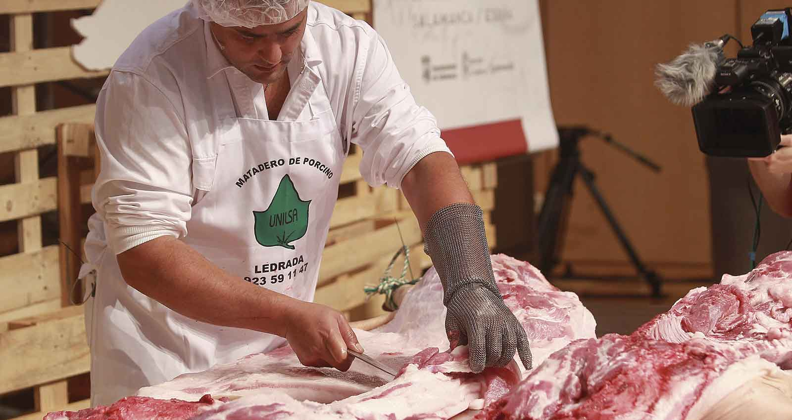

Embutidos R&F es un mini emprendimiento familiar que surgio en el año 2020.
Actualmente esta compuesto por Rodrigo de 22 años Y Francisco, su hermano, de 13.
Desde obtener y faenar la materia prima hasta cocinar los chacinados todo es realizados por ellos dos, Rodrigo tenia conocimientos previos con lo que es la industria carnica ya que desde los 16 años trabaja en frigorificos vacunos y porcinos.
Al princio era venderle a conocidos unicamente pero hoy en dia tienen una amplia clientela de pollerias, carnicerias, almacenes etc. Ofrecen productos de primera calidad a un precio inigulable.